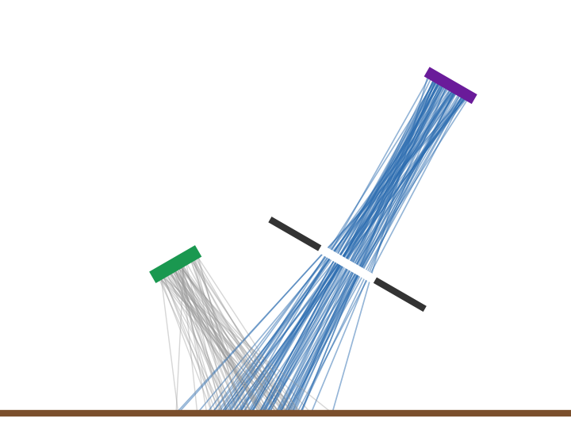
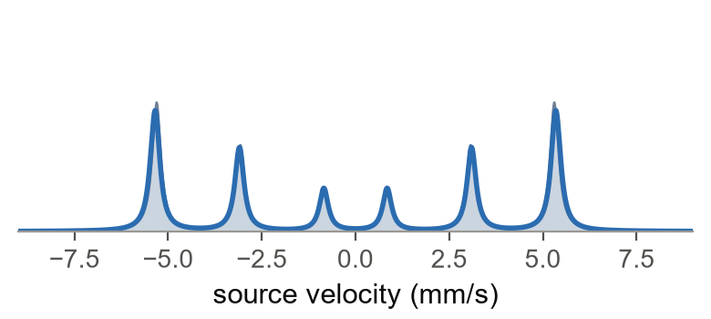
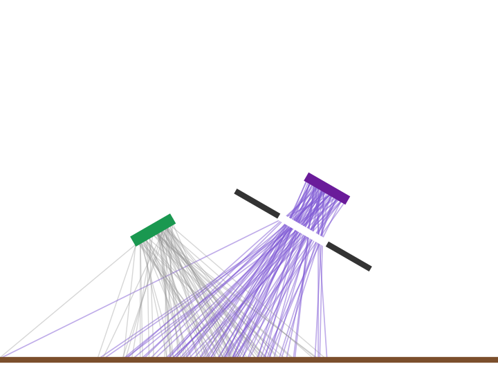
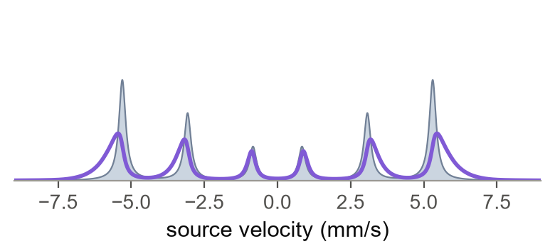
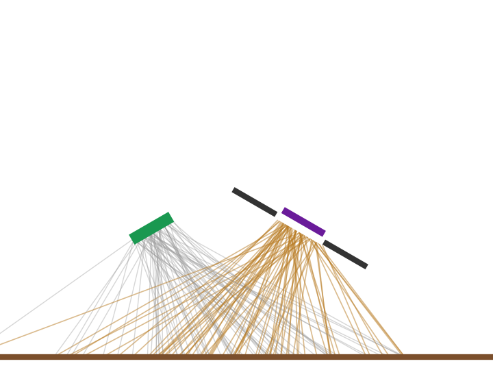
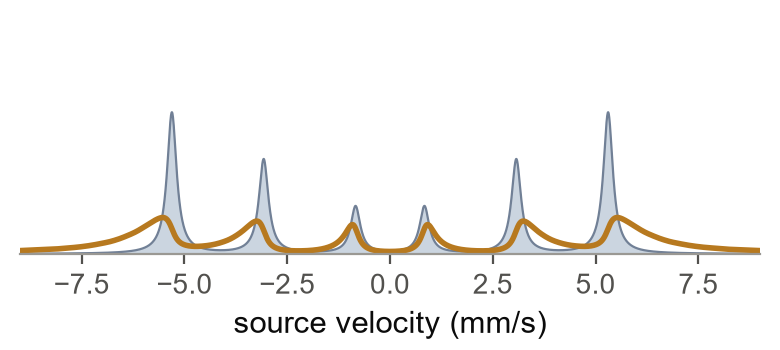
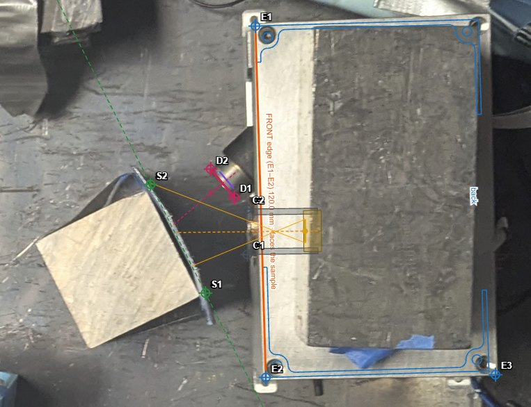
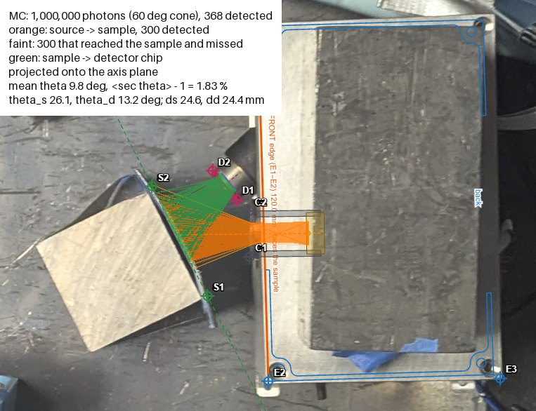

A small spectrometer for reading iron minerals on other planets, and the trade between how fast it counts and how sharp its spectrum is. Written for readers new to Mössbauer spectroscopy.
Scope. The photon Monte Carlo I wrote for the SiNRG backscatter Mössbauer head, a JPL and Caltech instrument for NASA's PICASSO program. Method: mineral spectra from published values → photo of the head → annotated dimensions → 3-D photon Monte Carlo → angle of each detected photon → smearing kernel → simulated spectrum. Every figure is simulated; measured spectra stay with the paper in preparation.
Question. A head that counts faster also blurs its spectrum. Does the blur only cost time, or can it hide minerals? Answer (simulated): at our head's blur it costs time, at most 1.65× for the hardest pair (hematite with magnetite), and every pair stays readable. The next design, ver3, with its source set 12 mm further back than drawn, keeps that blur and counts 2.0× as fast as the head in use (ver2). The blur is measured as stretch, ⟨1/cos θ⟩ − 1: how far the outer lines move outward, 1.8 % for both. The raw Monte Carlo reads it 1.3 to 1.6× high against measured spectra, so the ratios are the claim.
Iron sits in almost every rock, and its spectrum says which mineral holds it.
In olivine, iron is Fe²⁺ inside a volcanic silicate. In goethite it is Fe³⁺ bound to hydroxide, and goethite forms in water. On Mars, the MIMOS II spectrometers on the Spirit and Opportunity rovers used this difference. Spirit found goethite in the Columbia Hills, which Morris and colleagues read as evidence of past water [Morris et al. 2006]. Opportunity found jarosite, a sulfate that carries about 10 % water in its structure as hydroxide [Klingelhöfer et al. 2004].
How a spectrum shows up
The source is radioactive ⁵⁷Co. It emits gamma rays at 14.4 keV with an extremely narrow energy. ⁵⁷Fe nuclei in the rock absorb and re-emit only at their own energy, and that energy shifts slightly with the iron's chemical surroundings. To scan across those shifts, the instrument moves the source. A source moving at a few mm/s Doppler-shifts its gamma rays by just the right amount. So the horizontal axis of a Mössbauer spectrum is the source velocity. Wherever the source velocity matches a nucleus's energy, the rock sends extra photons back to the detector and a peak appears.
source and its velocity nowcounts in each velocity channel (simulated)
simulatedThe spectrum builds up one sweep at a time. The source swings between −11 and +11 mm/s. Each velocity channel collects counts whenever the source passes through it. Hematite's six peaks rise out of the noise only after many sweeps. A real measurement takes hours, which is why counting rate matters so much.
Each mineral has a fingerprint
Two patterns show up. Magnetic minerals split into six lines (a sextet) that span up to ±9 mm/s. Non-magnetic ones give two lines (a doublet) close to zero. The positions of those lines identify the mineral and tell Fe²⁺ from Fe³⁺.
modelSeven iron minerals found on Mars. Top row: sextets (note the wide velocity axis). Bottom row: doublets, on a zoomed axis. Line positions are published values measured by the rover spectrometers [Morris et al. 2006; jarosite: Klingelhöfer et al. 2004].
A rock is a mixture
A rock holds several iron minerals at once, so the instrument records the sum of their fingerprints. Fitting that sum back into its parts gives the share of the iron in each mineral. Below are two Spirit rocks, rebuilt from the phase fractions Morris and colleagues published for them.
modelFresh basalt versus a rock that saw water. Adirondack is mostly olivine and pyroxene, two doublets near zero. Clovis is dominated by goethite and hematite sextets. Each fill is one mineral's share of the iron. The dark line is their sum, which is what a spectrometer records. Fractions and line positions from Morris et al. 2006, Tables 1 and 5.
IIWhy lines smear
A closer source counts up to 24× faster, and its outermost line (line 6) comes out four times wider.
A Mössbauer spectrometer tunes its gamma rays by moving the source. A photon that leaves at an angle θ to the drive axis sees only v cos θ, so a line that belongs at v0 is recorded at v0/cos θ. Every photon has its own θ, so the lines smear outward, the outer lines most. To count fast, a backscatter head must accept a wide spread of angles. The simplest knob is how far the source sits behind its aperture. This example is a generic head, not ours. Ours sits about 17 to 20 mm back, between the first two columns.
source 30 mm back


1× (reference)line 6: 0.31 mm/s · spot Ø17 mm
source 8 mm back


8× fasterline 6: 0.73 mm/s · spot Ø38 mm
source 1 mm back


24× fasterline 6: 1.27 mm/s · spot Ø60 mm
input sextet, no smearMonte Carlo (colour = setting)rays rock → detector
simulatedOne knob, three settings. Top: photon paths from the 57Co source (purple bar) through the aperture to the rock (colour) and on to the detector (grey). Bottom: an α-Fe sextet with 0.28 mm/s lines before (grey) and after (colour) the angle spread. "Faster" is detected photons per emitted photon, relative to 30 mm. Spot = the rock area that gives 90 % of the signal. Panels from my year-end review slides.
IIITime or minerals?
At our head's smear, the worst case costs 1.65× the counting time; no pair becomes unreadable.
Smearing can hurt in two ways. Wider lines carry the same information with more noise per channel, so a usable spectrum takes longer to collect. If the lines blur enough, two minerals can start to look alike, and no amount of counting fully separates them. I checked both for pairs of minerals that a Mars spectrum has to tell apart. "Time" is how much longer you count to measure each mineral's share as precisely as with no smear. "Kept" is the share of the difference between the two minerals' spectra that survives the smear.
pair (equal iron)
our head 1.8 % stretch
source 8 mm back 7.2 %
source 1 mm back 33 %
simulatedSextets suffer most, because smear grows with velocity. Hematite and magnetite sit far out at ±8 mm/s, so their lines move most and run into each other. At our head this pair needs 1.65× the time, and 82 % of the difference between them survives. With the source 1 mm back, it needs 17× and only 9 % survives. The doublets near zero barely notice: olivine and pyroxene cost 1.09× at our head. Each cell gives time × and kept %. Method: a 50/50 mix, fitted for each mineral's share with line positions and widths free within published tolerances (0.05 mm/s on position, 0.10 on splitting and width, 1 T on field). Time × is the ratio of the share's variance (its Cramér-Rao bound) with and without smear, so it is the extra counting needed to match the unsmeared precision. Kept % is the squared difference between the two minerals' spectra after smearing, over before.
IVFrom a photo to a kernel
The head in use spreads its detected photons over 0 to 22° and stretches the lines by 1.8 %.
The real head was assembled by hand, so its drawings are not its geometry. I measure it from a photograph instead. The example is the September 2026 α-Fe run that defines ver2, the head in use.
1

Photo, annotated. I click the sample edge (S), the aperture cup (C), the detector face (D) and the enclosure corners (E). A known length on the enclosure sets the scale. Out come the angles and distances.
2simulated3-D Monte Carlo. Those dimensions build the source (red), lead collimator, Ø7.8 mm opening (black ring) and detector chip (blue). Orange paths are detected photons.
3

simulatedCheck against the photo. The same rays projected back onto the picture. Orange runs source to sample, green runs sample to detector. A misread landmark shows up here as a beam that misses the sample.
4simulatedAngle off the source axis for 33,430 detected photons. Mean 9.7°, none past 22°. This histogram is all the spectrum needs from the geometry: ⟨1/cos θ⟩ − 1 = 1.8 %.
5simulatedThe kernel matrix, zoomed on the outermost lines (double-click for all of it). Column = where a line truly sits, row = where the drive records it. Without smearing it would be the dotted diagonal. Here each column fans upward, because 1/cos θ is never below 1, and the fan widens with velocity. Multiply any spectrum by it to see what this head would record.
VThree heads
At the same 1.8 % stretch, ver3 counts 2.0× as fast as the head in use.
ver2 is measured from the photo above; ver3 is read from its CAD file. As drawn, ver3 counts 8.3× faster but stretches lines by 7.7 %. Sliding its source 12.1 mm back along its axis matches ver2's stretch and keeps a factor of 2.
ver1 · 2.9×stretch 4.5 % · source 20.5 mm behind the opening
ver2 · 1×stretch 1.8 % · 19.7 mm · the head in use
ver3 · 2.0×stretch 1.8 % · 19.9 mm (12.1 mm further back than drawn)
simulatedSame camera, same scale. Grey: lead collimator. Black ring: the opening that limits the beam. Red: the Ø8 mm source. Blue: the Ø7.7 mm detector chip. Orange: detected photon paths, 45 per head. "×" is detected 14.4 keV photons per source decay, relative to ver2.
simulatedWhat each head does to hematite. Grey: the input sextet with no smear. Left: through each head's angle histogram. Right: the outermost line (gold band). ver1's line 6 drops to under half its height and widens 2.9×. ver2 and ver3 lie on top of each other, so ver3's factor of 2 costs no resolution.
VIWhat it is for
Because the raw stretch reads high, I compare heads as ratios. With that caveat, the model of the measured head accounts for most of the extra line width that backscatter adds.
This is the second half of my thesis. The first half asks what entropy holds an alloy together (the entropy page). This half asks how to lay out a small spectrometer so it reads a rock fast without blurring it. The head, its drive and its counting electronics are a team effort with JPL (the instrument page). My parts are the drive metrology, the audit of the counting chain, the photograph measurements and this Monte Carlo.
Geometry only: the stretch comes from angles. Detector resolution, source line width and drive error are left out.
ver3's 12.1 mm setback does not fit today's parts. It needs a longer collimator nose or a re-cut mount.
Section II uses a generic head, so its numbers show the trend, not our line widths.
Details: how the figures were made
The tracer launches photons from a Ø8 mm disk source into a cone, follows them through the opening into a flat sample and back out, and keeps those that reach the detector chip. It records each one's angle to the source axis. Counts per decay are into 4π. Statistical error is about 0.5 % on efficiency and 0.01 % on stretch.
The bodies each head traces:
Generated from the region list the transport ran (research_kit.region_table): one row per transported region, plus bodies drawn but not transported. Sample frame: sample at z = 0, +z toward the head. Distances in mm.
ID
body
material
dimensions / position (mm)
source of the number
status
in the MC?
ver1-S
ver1: 57Co active area
Co in Rh
disk Ø8, 30.0 from the sample, axis 0.0° off normal
original design drawing
assumed
yes
ver1-O
ver1: limiting opening
Pb
Ø16.0, 20.50 in front of the source
original design drawing
assumed
yes
ver1-D
ver1: detector chip
Si
Ø7.7, 11.75 from the sample, axis 0.0° off normal
original design drawing
assumed
yes
ver2-S
ver2: 57Co active area
Co in Rh
disk Ø8, 44.4 from the sample, axis 26.1° off normal
measured from the photo
photo
yes
ver2-O
ver2: limiting opening
Pb
Ø7.8, 19.73 in front of the source
measured from the photo
photo
yes
ver2-D
ver2: detector chip
Si
Ø7.7, 24.44 from the sample, axis 13.2° off normal
measured from the photo
photo
yes
ver3-S
ver3: 57Co active area
Co in Rh
disk Ø8, 37.2 from the sample, axis 22.5° off normal
CAD of the next design, source moved 12.1 mm back
derived
yes
ver3-O
ver3: limiting opening
Pb
Ø8.0, 19.86 in front of the source
CAD of the next design, source moved 12.1 mm back
derived
yes
ver3-D
ver3: detector chip
Si
Ø7.7, 17.59 from the sample, axis 22.5° off normal
CAD of the next design, source moved 12.1 mm back
derived
yes
P
sample plane (all heads)
re-emitter
infinite plane z = 0
study assumption
assumed
yes
Assumptions
quantity
value
status
source / reason
line broadening
geometry only: detector resolution, source line width and drive error left out
assumed
this study
detected photons per head
about 30,000 (ver1 33,350, ver2 33,430, ver3 30,008)
computed
the ver1/ver2/ver3 study
statistical error
about 0.5 % on counts per decay, 0.01 % on stretch
computed
the ver1/ver2/ver3 study
ver1-S ver1: 57Co active area
Co in Rh, disk Ø8, 30.0 from the sample, axis 0.0° off normal
assumed
original design drawing
ver1-O ver1: limiting opening
Pb, Ø16.0, 20.50 in front of the source
assumed
original design drawing
ver1-D ver1: detector chip
Si, Ø7.7, 11.75 from the sample, axis 0.0° off normal
assumed
original design drawing
P sample plane (all heads)
re-emitter, infinite plane z = 0
assumed
study assumption
The kernel matrix spreads a line at v over c·v for each angle bin, with weights from the histogram, then interpolates onto a 0.1 mm/s grid. This page rebuilds it in the browser from the same histogram and checks one row against the Python code.
The panels, 3-D bodies, rays and spectra come from the study and slide builders behind my November 2026 PICASSO review. A script in this site's tools/ folder copies them over.